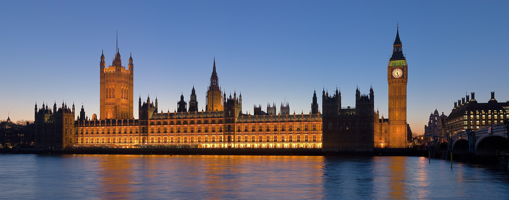

Londres
Londres es la capital y mayor ciudad de Inglaterra y de Reino Unido situada a orillas del río Tamesis, Londres ha sido un importante asentamiento humano desde que fue fundada por los romanos con el nombre de Londinium hace casi dos milenios.
Londres es una ciudad global, uno de los centros neurálgicos en el ámbito de las artes, el comercio, la educación, el entretenimiento, la moda, las finanzas, los medios de comunicación, la investigación, el turismo o el transporte.
